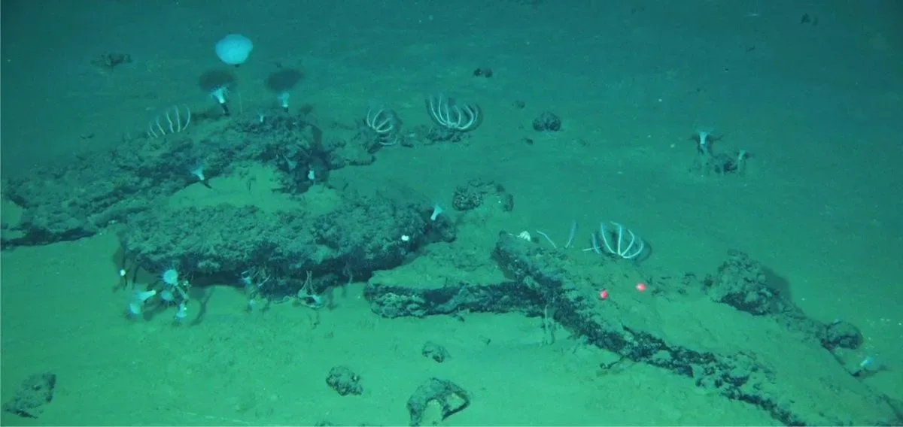
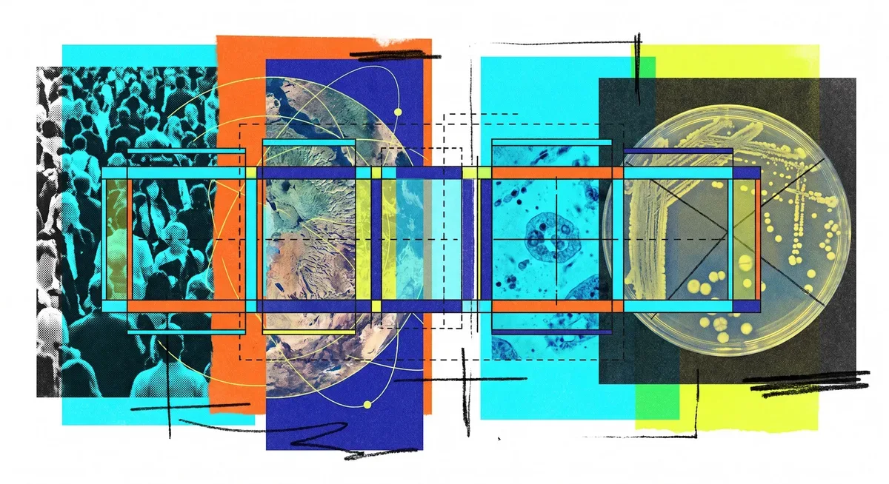
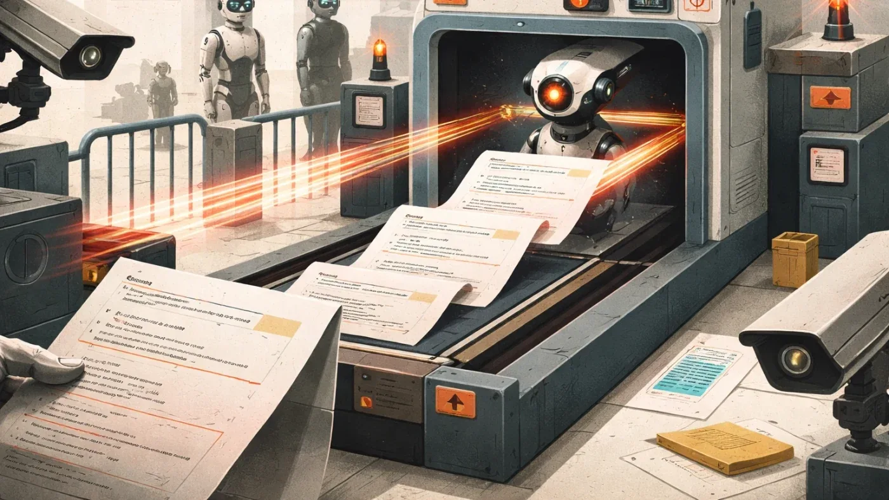
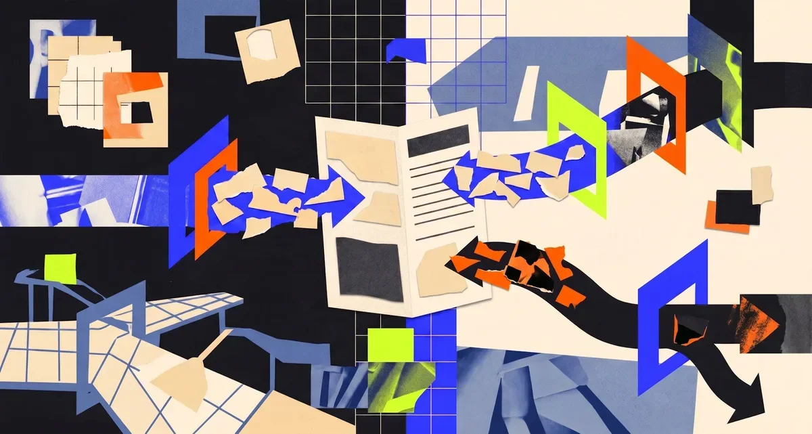
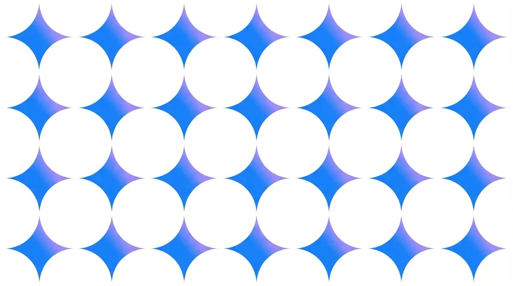
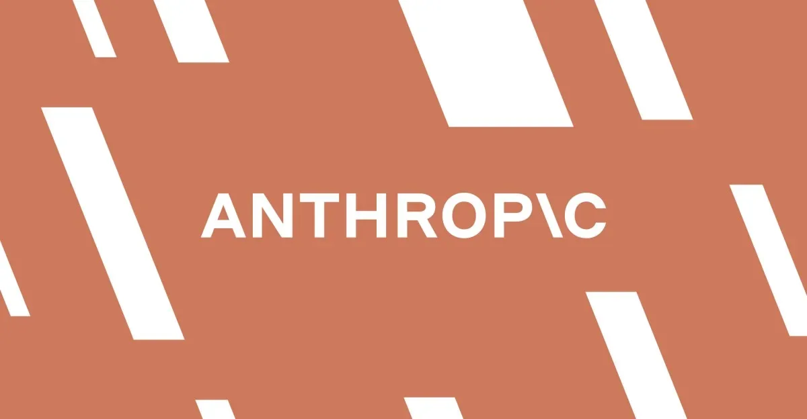
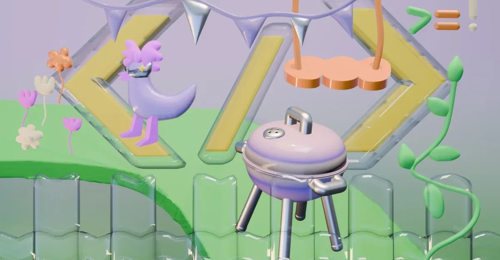
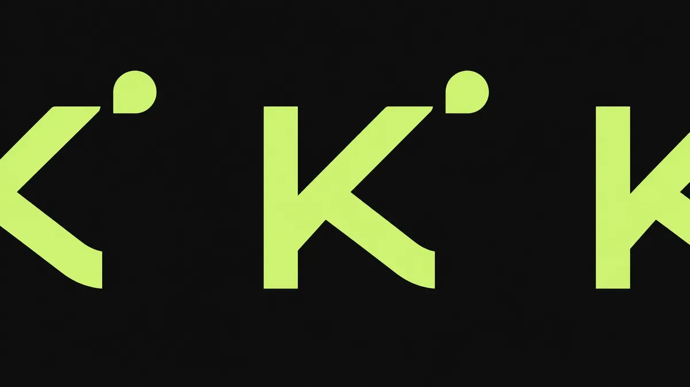
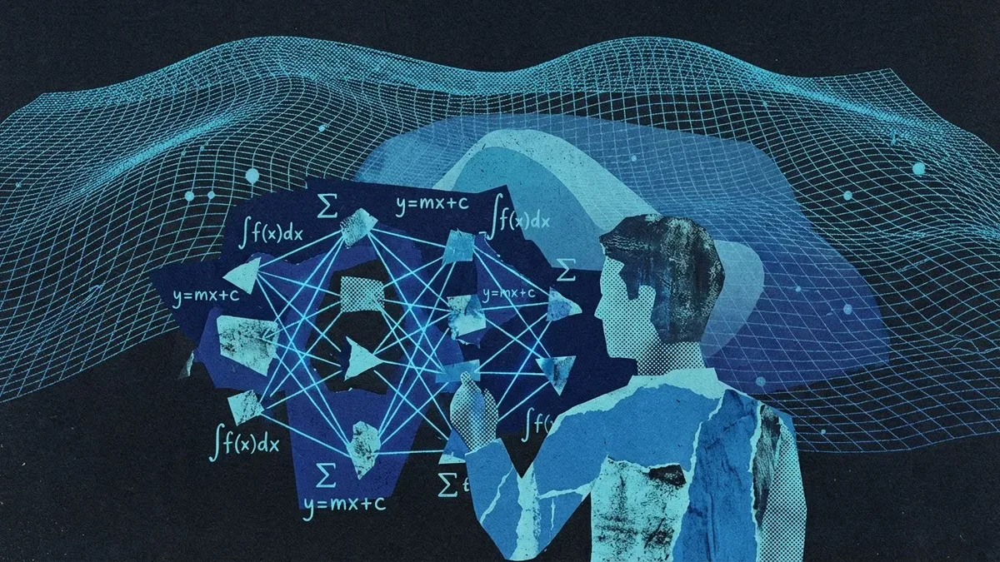
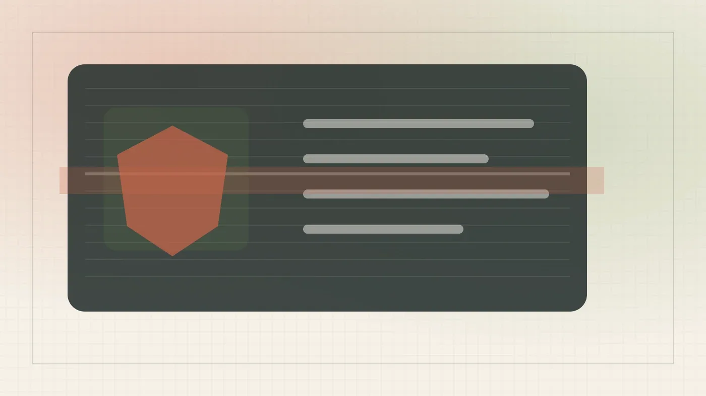

Индустрия
Некрополь китов, ДНК из помёта и галактики-горошины: научный дайджест недели
Китовый некрополь на дне Индийского океана: 476 ископаемых и сотни неизвестных видов
404 Media
13 июн.Релизы, исследования, продукты, инвестиции и AI-рынок.
Архив · 741 новостных материалов · Автоматическое пополнение приостановлено

Китовый некрополь на дне Индийского океана: 476 ископаемых и сотни неизвестных видов

Amazon CEO вызвал экспортные ограничения на модели Anthropic после доклада о киберрисках.

Одна модель считает людей в толпе, клетки под микроскопом и машины со спутника — и ошибается вдвое меньше конкурентов

Голосовой дневник на старом ноутбуке за $1,91 в месяц — и урок о том, как LLM тихо придумывает факты

Генпрокурор Нью-Йорка направил OpenAI повестку — компанию проверяют по широкому кругу вопросов.
Claude Code 2.1.32 умеет запускать команду агентов — как включить и когда это реально нужно

Qwen дешевле на бумаге — но реально обходится в 15–30 раз дороже Claude. Разбор на живом Go-коде.
Сжёг недельный лимит Claude за сутки — и превратил это в браузерную игру с антифрод-бэкендом

Один HTML-файл считает VaR, стресс-тестирует портфель и подбирает размер позиции по ATR

Один Markdown-файл вместо дообучения: как Microsoft научила GPT-5.5 работать лучше без изменения весов

Google Research обошла OpenAI и Anthropic в переводе текста в SQL-запросы — разрыв составил более 7 п.п.
Наделла против token-maxing: почему мощные ИИ-модели не нужны для каждой задачи
Apple добавила ИИ-инструменты для редактирования фото в iOS 27. Разбираем Clean Up, Extend и Spatial Reframing.

Anthropic отключила Fable 5 и Mythos 5 по требованию властей США

Один запрос — и приложение для Android готово. Но до релиза пришлось пройти несколько итераций.
Anthropic выпустила и закрыла модель за 4 дня. Что это говорит о рисках ИИ-зависимостей в продакшне
MCP-сервер для Obsidian даёт LLM доступ к вашим заметкам без ручного копирования.
Anthropic отключила топовую модель всем подряд — потому что не смогла проверить паспорт
ИИ-агент провёл шпионскую кампанию на 100/100 по шкале риска — и это уже не теория
Visa защитит платежи ИИ-агентов в OpenAI: лимиты, токены и контроль пользователя.

Китайская open-weights модель для кода дешевле GPT-5.5 в 12 раз — но насколько она хороша?
Meta тратит миллиарды на ИИ внутри компании — и теперь вводит лимиты на токены для сотрудников

Claude Fable 5 набрал 88% на самом сложном уровне FrontierMath — GPT-5.5 отстаёт на 13 пунктов
Google DeepMind создал кастомные версии Veo и Imagen для короткометражки на Tribeca — пример bespoke-подхода к ИИ в кино.

Как починить граф знаний на юридических текстах: три этапа оптимизации LightRAG с кодом и топологическим анализом
Anthropic потратила три месяца на запуск кибермодели — и отключила её за 15 минут по директиве Вашингтона
США запретили иностранцам пользоваться двумя моделями Anthropic — первый в истории экспортный контроль на ИИ-веса

99% провалов и 20 лет фальсификаций: почему Альцгеймер не лечится и что теперь меняется
Gemini 2.5 Flash распознаёт борщ лучше лазаньи — и почему confidence бесполезен

США отключили самые мощные модели Anthropic глобально — компания выполняет приказ, но называет его ошибкой